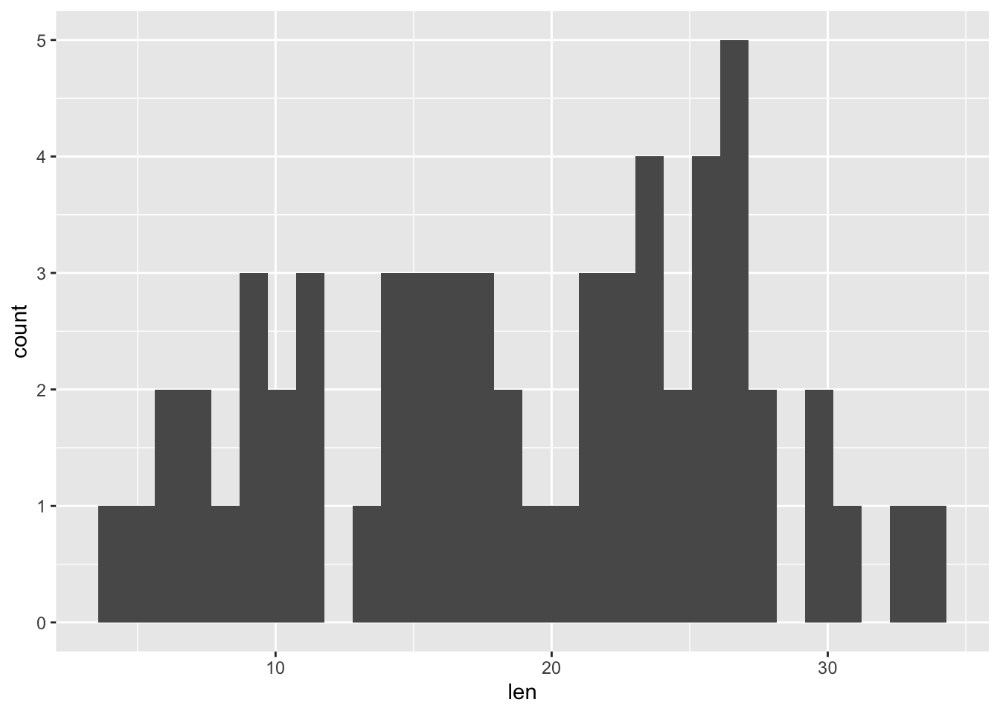
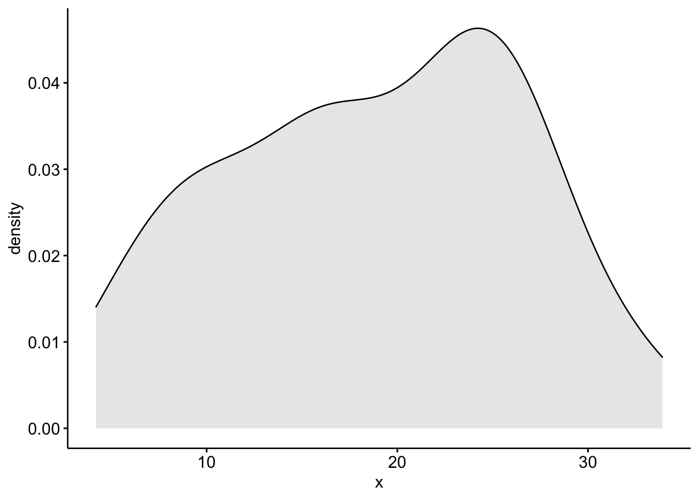
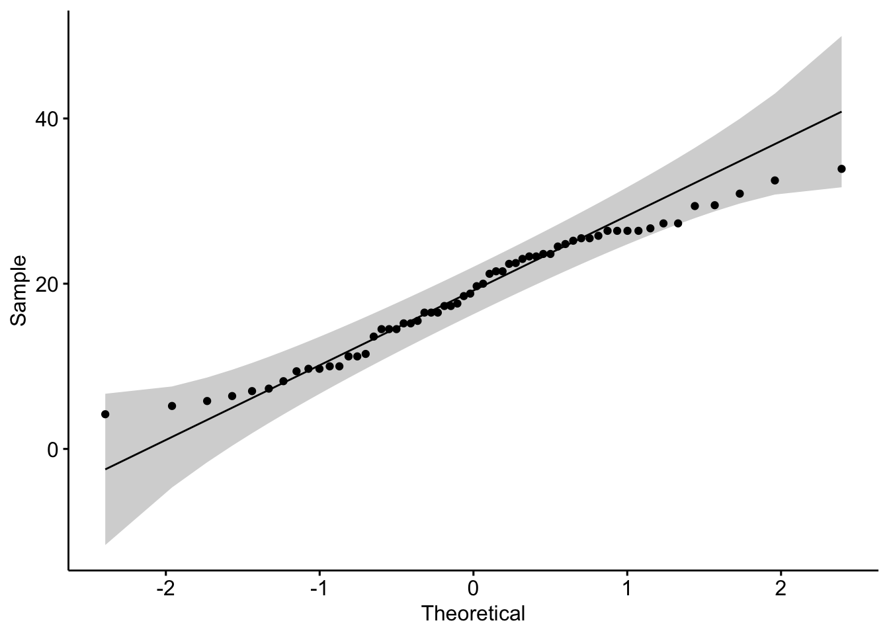
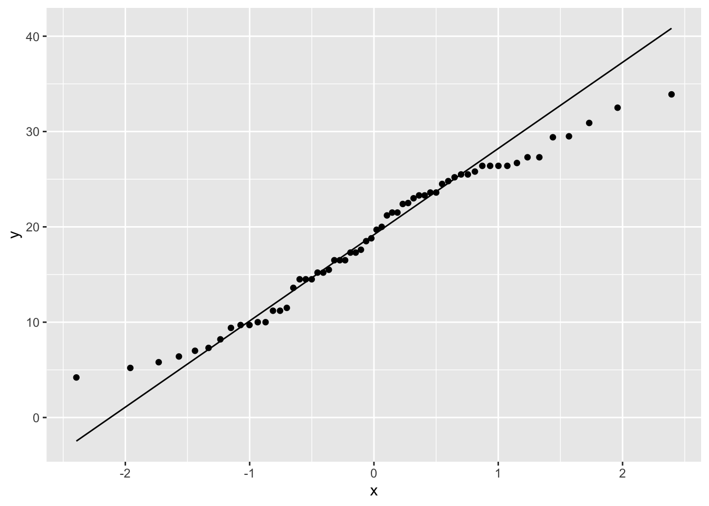

library(tidyverse)
library(rstatix)
library(ggpubr)Normality Test
References
- Normality test in R: data novia
Explore Data
glimpse(ToothGrowth)
#> Rows: 60
#> Columns: 3
#> $ len <dbl> 4.2, 11.5, 7.3, 5.8, 6.4, 10.0, 11.2, 11.2, 5.2, 7.0, 16.5, 16.5,…
#> $ supp <fct> VC, VC, VC, VC, VC, VC, VC, VC, VC, VC, VC, VC, VC, VC, VC, VC, V…
#> $ dose <dbl> 0.5, 0.5, 0.5, 0.5, 0.5, 0.5, 0.5, 0.5, 0.5, 0.5, 1.0, 1.0, 1.0, …skimr::skim(ToothGrowth)| Name | ToothGrowth |
| Number of rows | 60 |
| Number of columns | 3 |
| _______________________ | |
| Column type frequency: | |
| factor | 1 |
| numeric | 2 |
| ________________________ | |
| Group variables | None |
Variable type: factor
| skim_variable | n_missing | complete_rate | ordered | n_unique | top_counts |
|---|---|---|---|---|---|
| supp | 0 | 1 | FALSE | 2 | OJ: 30, VC: 30 |
Variable type: numeric
| skim_variable | n_missing | complete_rate | mean | sd | p0 | p25 | p50 | p75 | p100 | hist |
|---|---|---|---|---|---|---|---|---|---|---|
| len | 0 | 1 | 18.81 | 7.65 | 4.2 | 13.07 | 19.25 | 25.27 | 33.9 | ▅▃▅▇▂ |
| dose | 0 | 1 | 1.17 | 0.63 | 0.5 | 0.50 | 1.00 | 2.00 | 2.0 | ▇▇▁▁▇ |
Normality Check
Objective
We want to test if the variable len (tooth length) is normally distributed.
Visual Method
Histogram
ToothGrowth %>%
ggplot(aes(len)) +
geom_histogram()
#> `stat_bin()` using `bins = 30`. Pick better value with `binwidth`.
Density
ggdensity(ToothGrowth$len, fill = "lightgray")
QQ Plot
ggqqplot(ToothGrowth$len)
ToothGrowth %>%
ggplot(aes(sample = len)) +
geom_qq() +
geom_qq_line()
Shapiro-Wilk’s normality test
Hypothesis
\(H_0\) = “sample distribution is normal”
One Variable
shapiro.test(ToothGrowth$len)
#>
#> Shapiro-Wilk normality test
#>
#> data: ToothGrowth$len
#> W = 0.96743, p-value = 0.1091Or
ToothGrowth %>% shapiro_test(len)
#> # A tibble: 1 × 3
#> variable statistic p
#> <chr> <dbl> <dbl>
#> 1 len 0.967 0.109P-value > 0.05; implying that the distribution of the data are not significantly different from normal distribution; therefore, we can assume normality.
Grouped Data
ToothGrowth %>%
group_by(dose) %>%
shapiro_test(len)
#> # A tibble: 3 × 4
#> dose variable statistic p
#> <dbl> <chr> <dbl> <dbl>
#> 1 0.5 len 0.941 0.247
#> 2 1 len 0.931 0.164
#> 3 2 len 0.978 0.902